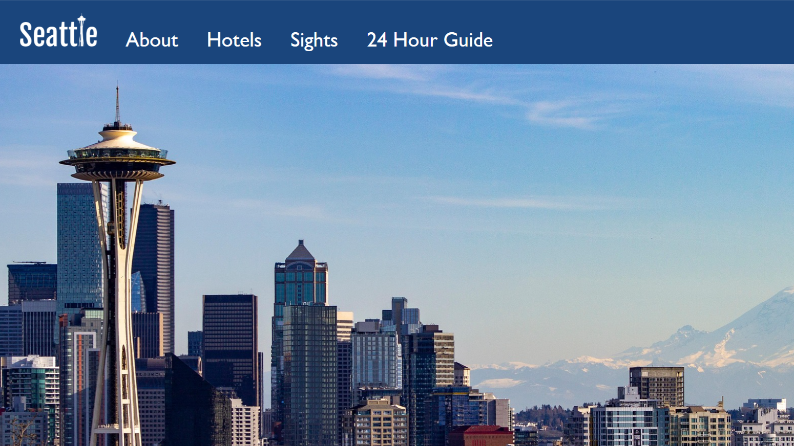

Hi! I'm Carla Bogusky, a third-year game design student at George Mason University. I've been playing video games for as long as I can remember, and I've wanted to be a game designer since I was 10 years old. I've been learning programming for 7 years and Unity game development for the past 5 years. I have experience coding in Java, C++, C#, and HTML/CSS. I also have experience with various art and creative programs, such as Adobe Photoshop, Illustrator, Premiere, and 3DS Max.
Faebloom is a 2D platformer game about a fairy trying to navigate her way through the forest using elemental magic. It was made by 3 people in 2 months as a final project for a game design class. I was the lead programmer on this project and implemented most of the game's mechanics, such as the elemental powerups and the enemy functionality. I also contributed to level design, and I composed both the title screen music and the level music.
Artist's Nightmare is a 3D hack-and-slash game about a stressed art student fighting off animated drawing mannequins in her nightmares. It was made by myself in 1 month as a midterm project for a game design class. I programmed the character controller, including a 3-attack combo, as well as the enemy functionality. I also created the level design. All models/animations were sourced from the Unity Asset Store, Sketchfab, and Mixamo.
Crossbow Game is a first person shooter with a cute fantasy twist. It was made by myself in 2 weeks for a game design summer program I attended in high school. I programmed the shooting mechanics of the first person character controller, as well as the enemy functionality, player health, lose condition, and win condition. All models were sourced from the Unity Asset Store.
The Fire Mage's Adventure is a nearly-full reskin of the Unity Platformer Microgame template as a final project for a game art class. I made my own textures for all of the environment objects and background elements to transform the game into a snowy landscape. I also designed and animated an original player character, a fire mage, to contrast with this wintery world.
Dungeon of the Trolls is my final project from a game programming class. The goal of this assignment was to repurpose and refine code and assets from several of our earlier projects in the class to create something new. I made a small dungeon exploration game.
As part of my game design coursework, I've made a few game music tracks. My compositions for Faebloom are featured in the video on Faebloom above. Here are a few other tracks I have composed. All music was made using FL studio.
Song #1: Mysterious Forest
Song #2: Mining Cave
Song #3: Peaceful Town
Song #4: Beach Battle
I've also dabbled in web design and HTML/CSS coding. In addition to making this portfolio website, I made a mock travel website for the city of Seattle as a final project for a web design class.
See my website here!

Email: cbogusky@gmu.edu